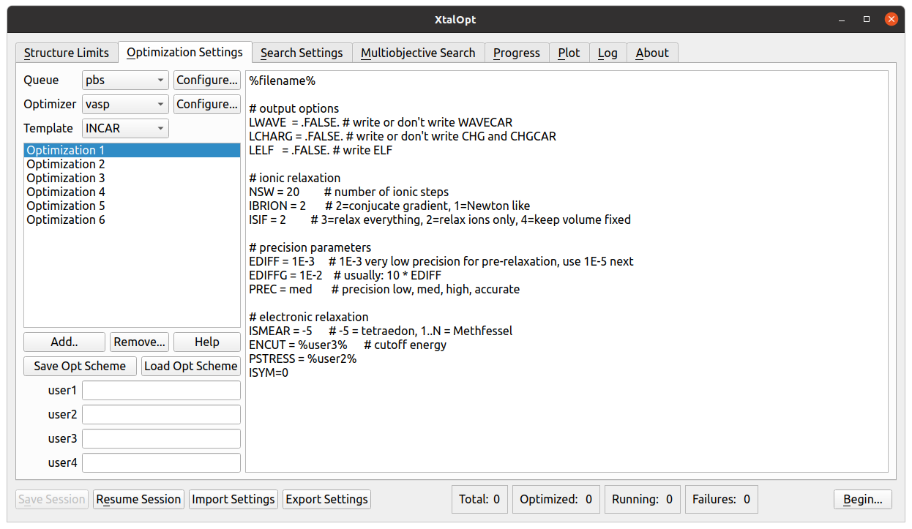
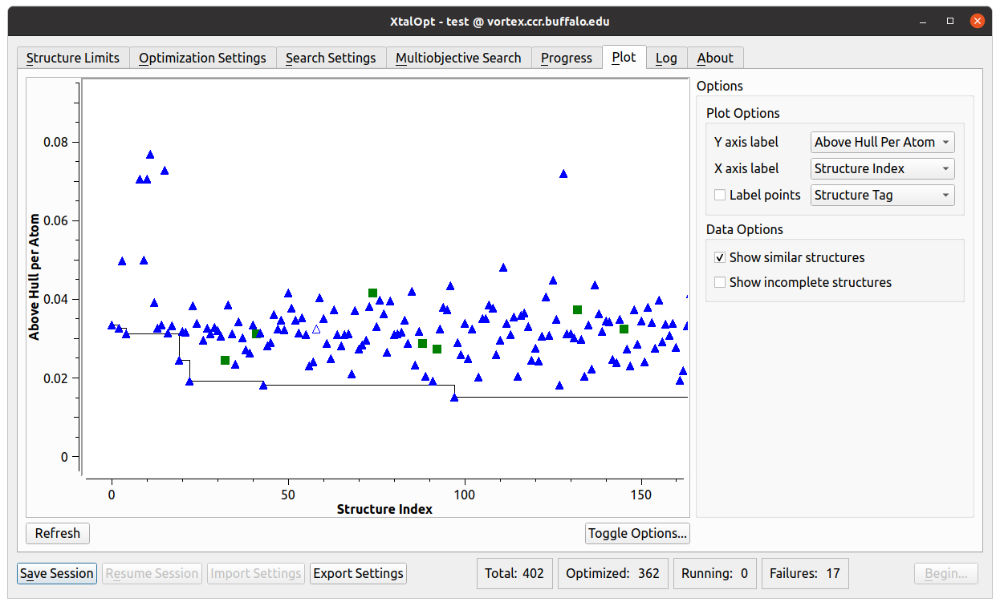

XtalOpt is a free and truly open source evolutionary algorithm designed to predict crystal structures.
Download todayLearn more
News
- 9/14/2011 XtalOpt Version r8.0 Released See the announcement.
- 5/27/2011 XtalOpt Version r7.0 Released See the announcement.
- 4/13/2011 XtalOpt Version r6.1 Released See the announcement.
- 4/1/2011: QueueInterface merged into stable Now any optimizer can can be run either locally or on a remote cluster. The user interface has changed significantly, see the new tutorial for help.
- 3/4/2011: XtalOpt blog Stay up to date on new XtalOpt developments at http://davidlonie.blogspot.com.
Release 9.0
- Added support for the MOPAC semi-empirical quantum mechanics code and the SIESTA ab initio molecular dynamics code.
- Customizable polling interval for updating remote queue information.
- Automatic removal of remote working files optional.
- Optional removal of unnecessary files for VASP caluclations.
- Option to rank all current structures and export structures to a new subdirectory as .cml, CONTCAR, or .got.
- Added a new "mitosis" function used to generate higher local order for initial structures.

Options for the "mitosis" function found in the "Structure Limits" tab.
- Limit the total number of structures created during a run.
- New option to replace a failing structure with a new offspring.
- Ability to “inject” (seed) a structure mid-run
- Minimum atomic separation now specified as a fraction of the sum of atomic radii, with a hard minimum.
- Submission of remote calculations is throttled to ease DRMS load.
- More server-friendly method of fetching queue data.
- Support for GULP shell/core calculations added.
- Fix compilation against Qt 4.6.3 and 4.8.0.
- Updated space-group detection library to spglib 1.0.8.
- Bundled libssh library removed, now an optional dependency.
- Added option to use command-line ssh/scp interfaces when libssh is unavailable or Kerberos authentication is needed.
- Numerous misc bugfixes.
Release 8.0

- Incorporated the XtalComp library for duplicate structure removal (niching).

Release 7.0
- Added SLURM queue interface (new, tested)
- Added LSF (Load Sharing Facility) queue interface (new, experimental)
- Fix bug when structures are auto-killed on job failure.
- Fixed bug that clear all POTCAR data when deleting an optstep
- Fix bug that cause searches to stall when run overnight
- Cells with a negative matrix determinant are no longer submitted to VASP (VASP will refuse to handle these)
- Fix bug when killing structures from the progress table
- Fixed bug in OpenBabel that set enthalpy values incorrectly for VASP
- New "Translate Atoms" tool added to Avogadro's crystallography extension

XtalOpt r7.0 will add support for SLURM and LSF (Load Sharing Facility) queuing systems.
Release 6.1
- Support for Sun Grid Engine added. Thanks to Atsushi Togo for testing and contributing to this feature!
- Ability to perform geometry optimizations locally using any supported optimizer on the user's workstation. Contrast to r5, when GULP had to be run locally and all other codes were run on a remote PBS cluster. Now any code may be run locally or on remote PBS or SGE clusters.
- Enthalpy vs. Structure Number plots now trace lowest enthalpy structures.
- Added option to copy a structure's POSCAR representation to the clipboard using the Progress Table's right-click menu
- Searches begin immediately, no need to click refresh to start search

Structure Initialization

Optimization Settings
Search Settings

Progress

Plot


Mutation Operators
Ripple

Strain

Ripple

Other Avogadro Extensions...
Nanotube Builder

Avogadro contains a nanotube builder extension (shown on the right). The extension generates a single-wall carbon nanotube from an (n,m) specification. More info can be found here.
 A 20 angstrom, hydrogen capped (6,6) nanotube.
A 20 angstrom, hydrogen capped (6,6) nanotube.
Supporters